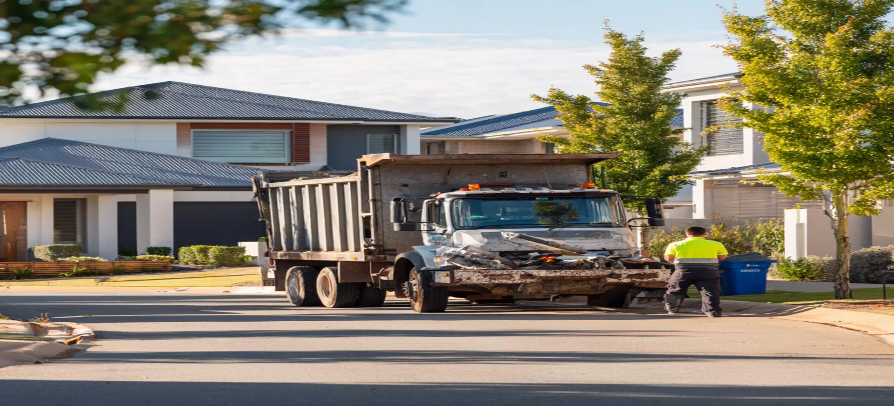

Skip Bins Bunbury WA Areas
Skip bins Bunbury WA services are available across residential, commercial, industrial, and construction locations throughout the region. Customers use skip bins for household rubbish, green waste, renovation debris, demolition materials, furniture disposal, and ongoing commercial waste management. Having the right skip bin onsite helps keep projects organised, reduces unnecessary trips to disposal facilities, and provides a more convenient way to manage waste during projects of all sizes. Whether you are completing a home cleanup or a larger building project, skip bins Bunbury WA solutions can help make waste disposal more efficient.
Areas We Service Throughout Bunbury WA
Our skip bin hire Bunbury WA service covers Bunbury CBD and many surrounding suburbs and communities. Customers throughout residential neighbourhoods, commercial precincts, industrial zones, and construction areas regularly use skip bins Bunbury WA services for a wide range of waste removal projects. Whether your property is located close to the city centre or in surrounding districts, we help connect customers with practical skip bin hire solutions suitable for local waste management requirements.
Skip Bin Solutions Available in Bunbury Region
Different projects generate different types of waste, which is why skip bins Bunbury WA services are used across a wide range of industries and property types. Homeowners commonly hire skip bins for garage cleanouts, moving house, garden maintenance, deceased estate clearances, and renovation projects. Builders often require skip bin hire Bunbury WA services for timber, concrete, bricks, plasterboard, and mixed construction materials. Businesses also use skip bins for office cleanups, warehouse waste, retail refurbishments, and ongoing commercial rubbish disposal.
When You May Need Skip Bin Hire Bunbury WA
Many customers arrange skip bin hire Bunbury WA services when the volume of waste becomes too large for standard council collection. Common situations include home renovations, landscaping projects, rental property cleanups, commercial upgrades, office relocations, and construction work. Having a skip bin onsite helps contain waste, improve site safety, and create a more organised working environment. Skip bins Bunbury WA solutions are often used throughout both short term and long term projects where ongoing waste removal is required.
Why Location Matters For Skip Bin Delivery
Property access can influence skip bin delivery throughout the Bunbury region. Some locations have limited driveway access, narrow entrances, restricted parking, or reduced placement space. Providing site information before delivery helps ensure the most suitable skip bin size is selected and positioned correctly. Local knowledge of the area also helps support efficient skip bins Bunbury WA delivery and collection arrangements while reducing the risk of placement issues or project delays.
Frequently Asked Questions
Do you provide skip bins Bunbury WA services throughout the entire region?
Yes. Skip bins Bunbury WA services are available across Bunbury and many surrounding residential, commercial, and industrial locations. Availability may vary depending on demand, access conditions, and project requirements, but customers throughout the wider region can generally access practical skip bin solutions for household, commercial, and construction waste disposal projects.
Does my location affect skip bin hire Bunbury WA delivery?
Property access can influence how skip bins are delivered and positioned. Factors such as narrow driveways, limited street parking, steep access points, overhead obstacles, and available placement space may affect the most suitable bin size or delivery arrangement. Providing site details before booking helps ensure a smoother delivery process and allows the correct skip bin to be selected for your location.
What projects commonly use skip bins Bunbury WA services?
Skip bins Bunbury WA services are commonly used for household cleanups, moving house, landscaping projects, green waste removal, renovation work, office cleanouts, retail fit-outs, warehouse clearances, and construction projects. Different waste types require different bin capacities, which is why customers often choose skip bins based on the volume and nature of the materials being removed.
Can skip bin hire Bunbury WA be used for commercial and construction sites?
Yes. Builders, contractors, developers, property managers, and businesses regularly use skip bin hire Bunbury WA services to manage ongoing waste and debris. Skip bins help maintain cleaner worksites, improve organisation, and provide a convenient way to contain waste throughout the duration of commercial or construction projects.
How do I choose the right skip bin size for my project?
Choosing the right skip bin depends on the amount of waste being generated, the type of materials involved, available placement space, and the overall scope of the project. Smaller skip bins are often suitable for household cleanups, furniture disposal, and garden waste, while larger bins are commonly selected for renovations, commercial waste, and construction debris. If you are unsure which option is most suitable, we can help assess your requirements and recommend a practical skip bins Bunbury WA solution that matches your project while helping avoid unnecessary costs, overfilling, or additional collections.